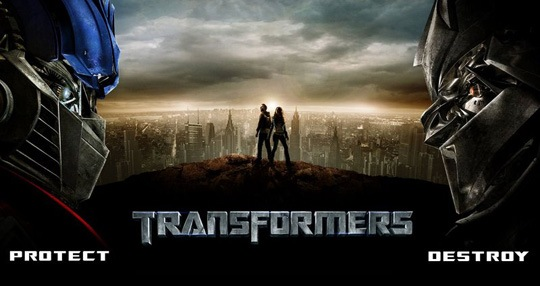

尽管07年还没有过去，但我万分坚信《变形金刚》会当之无愧成为07年度最佳过瘾片。 我不是金刚Fans，甚至都没怎么看过动画版的变形金刚。只是有幸和众多金刚Fans们生于同一个年代，耳濡目染了一些擎天柱威震天的形象。小时候看到周围的男孩子们拿着变形金刚摆来摆去嘴里还不忘念念有词的时候，只觉得傻。但这部片子却真的让我想要尖叫了。一开场就颇有亲切感地看到了《越狱》里的Sucre，之后又看到了《24小时》里总统的保镖Aaron，尽管他们都是没多少戏份的配配角。当擎天柱、爵士、荆棘、铁皮、大黄蜂相继变成人型高大的屹立起来，将男女主人公包围在中间的时候，我起了两胳膊鸡皮疙瘩，我估计好多金刚Fans看到这儿应该得哭出来吧！140分钟的电影，好几次情不自禁喊出“On my god”，所幸电影声效很大，周围人听不见。
已经若干年没有看到如此爽的片子了，若干年前，我到电影院看《独立日》的时候，仿佛有此体会，也可能是同样在7月4日上映的片子吧，才让我想到了那么久远的一部电影。当电影特效日趋雷同，好莱坞大片声誉每况愈下的今天，我差点错过了这部绝对经典的特效饕餮。我曾以为它是和《蜘蛛侠》、《忍者神龟》、《超人》差不多概念的片子，结果发现自己真正太低估了它。那些片子和它相比，明显不在一个档次上。 当然，你还是可以说它故事俗套，但看这部电影，你真的是冲着它的故事去的么；你也可以说它没有内涵，但当一溜汽车人咵嚓咵嚓在你面前炫目大变形，你只能以最高角度深切仰视他们的时候，你真的还在想着总结中心思想么。何况比起大多数好莱坞大片，这部算是真正节奏紧凑，人物繁多，更有三条主线并进，2个半小时的影片，丝毫不觉冗长，稍有不紧张之处都有适当的笑料弥补。电影结束，我发现第一次在电影院有这么多人陪着我一起看完字幕。 北京票价高达70元一张，但当我从放映厅走出来的时候，听见有人说，70元，也真的值了！真的，如果可能，我希望再去电影院看一遍，选个周二的晚上。 （更多评论，请参看豆瓣上专业金刚Fans的文章，我这个伪Fans就不多罗嗦了。）